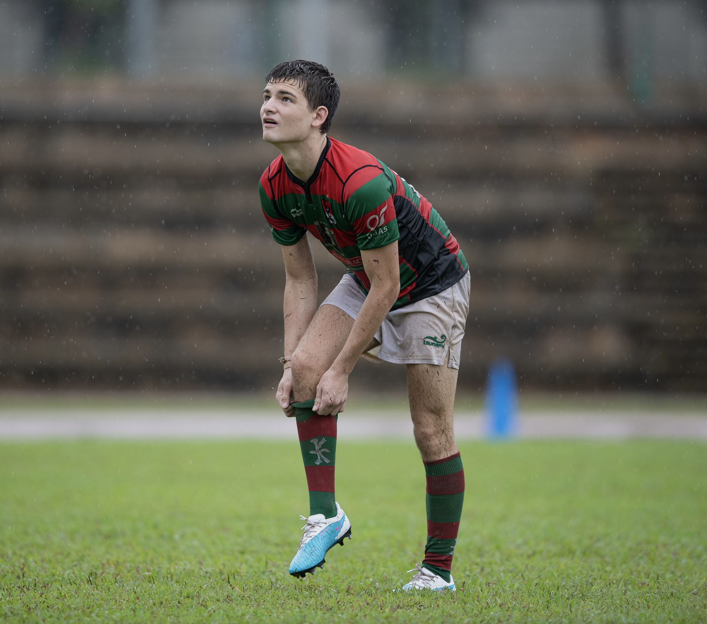

AUGUSTIN BAUDANT
1ST YEAR STUDENT IN ESSEC BUSINESS SCHOOL, GLOBAL BBA PROGRAM
Interested in joining ESSEC ? üñåMY HOBBIES
Rugby
I play rugby since I am 8 years old, this my passion. I won the National cup tournament here in Singapore with the Bucks : my team here.
Piano
I have played the piano for many years and I really like to play it, girls can fall in love pretty quickly.
Travelling
My dream has always been to visit as uch counties as i could. It what makes your life unforgettable by the experiences you go through. Singapore is a very good place to live because you can visit a lot of countries nearby.When I'll be able to d it by myself I wuld love to travel everywhere I hven't been already.
MY ACADEMIC BACKGROUND
ESSEC Singapore
I am a first year student enrolled in ESSEC, and I study marketing, international business and economics.
Lycée Ipesup, Paris 5ème
French Baccalaurate section, Mathematics, Physics and Chemistry, Economics with Japanese, Spanish and Englsih as languages taken
MY BIGGEST PROJECT
The BDE Campaign - GNW

During a month, I have been working on the biggest project of my life, the student council campaign. I was the president of my list that was called "Guns'N'Roséw - GNW". Our mascot was Leopardo DiCaprio and people loved it. Joking aside, this project taught me a lot about leadership, management and negotiating skills and even though I lost, it was an amazing experience for me.